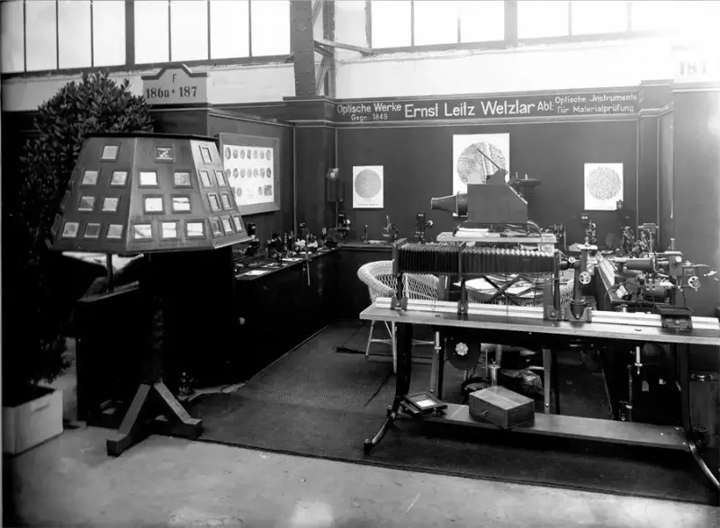

March 5, 2025, Chinese mainland. The first mass-produced Leica camera marks a historic centenary. One hundred years ago, on March 1, 1925, the Leica I made its debut at the Leipzig Spring Fair. Its compact, lightweight design changed photography forever. On the 100th birthday of this landmark product, Leica Camera AG also honors Ernst Leitz II, the far-sighted entrepreneur. It was his bold decision to mass-produce the Leica that laid the foundation for 35 mm photography. This centenary looks back warmly on a corporate legend. It also looks deep ahead to the future of photography.
I decided to take the risk. These firm words from Ernst Leitz II started the mass production of the Ur-Leica, Oskar Barnack's original prototype. Even under the dual pressure of a weak economy and technical challenges, Ernst Leitz II added the new camera system to the Leitz factory. Launching the Leica I at the Leipzig Spring Fair (March 1 to 11) proved to be a shrewd business move. The fair was already the world's top stage for technical innovation. The Leitz booth, on the upper floor at stand 194/195, became the starting point of the 1925 photography revolution. The Leica I with its Anastigmat 50 f/3.5 lens caused an immediate sensation. It established the 24x36 mm compact camera as the world standard.
Master photographers such as Alexander Rodchenko, Gisèle Freund, and André Kertész quickly saw the endless possibilities of the small, quiet, and efficient Leica. For the first time, the camera gave people the power to capture slices of real life and keep the decisive moment. This changed the very idea of photography. Modern press photography and art photography were born from it. The first Leica I sold about a thousand units in its first year. This set Leica as a benchmark in photography.

In the years that followed, Leica kept improving the Leica I and introduced innovative interchangeable lenses. This strengthened the success of the Leica camera system. In 1930, the first camera with a bayonet mount and three interchangeable lenses went on sale. The Leica II, which arrived in 1932, was the first Leica with a built-in rangefinder for fast, precise focus. Seven lenses with the standard bayonet mount were available at the time. The community of Leica photographers grew with the new technology. These creators, with a cultural mission, still form the foundation of Leica's culture today.
Dr. Andreas Kaufmann is the chairman of the supervisory board of Leica Camera. He said: For one hundred years, Leica has shaped the progress of photographic technology and culture through innovation, fine craftsmanship, and engineering. Leica always focuses on the essential. It captures unique, true images with passion and records the marks of its time. That is why celebrating this centenary of making, together with outstanding photographers around the world, and focusing on the act of creation, is the best way to mark this milestone.
With new products and forward-looking technology, Leica Camera keeps writing the corporate legend that began with the Leica I. Today, Leica keeps opening new paths, strengthens the core of its brand, and reaches new audiences by broadening its business. The mobile ecosystem is a new entry point to the Leica world. In February 2025, the innovative Leica LUX camera grip arrived. Used with the Leica LUX app, iPhone users can now experience the distinct Leica photography aesthetic.
Leica Camera: Going With Photography
Leica Camera AG is an international company that makes high-end cameras, lenses, and sports optics. It has more than 150 years of history. As part of its growth strategy, the company has expanded into mobile imaging (smartphones), high-quality spectacle lenses, and watchmaking. It also has a place in home theater with its own projectors.
Leica Camera is based in Wetzlar, Germany, and has another production site in Vila Nova de Famalicão, Portugal. It runs its own sales network around the world, including more than 120 Leica stores. The company has 2,400 employees and posted a turnover of 554 million euros in fiscal year 2023/24.
The Leica brand stands for quality, German craftsmanship, industrial design, and innovation. As a core part of its brand culture, Leica works to advance image culture. It now has about 30 Leica galleries around the world, plus Leica Academies and international photography awards such as the Leica Hall of Fame Award and the Leica Oskar Barnack Award (LOBA).